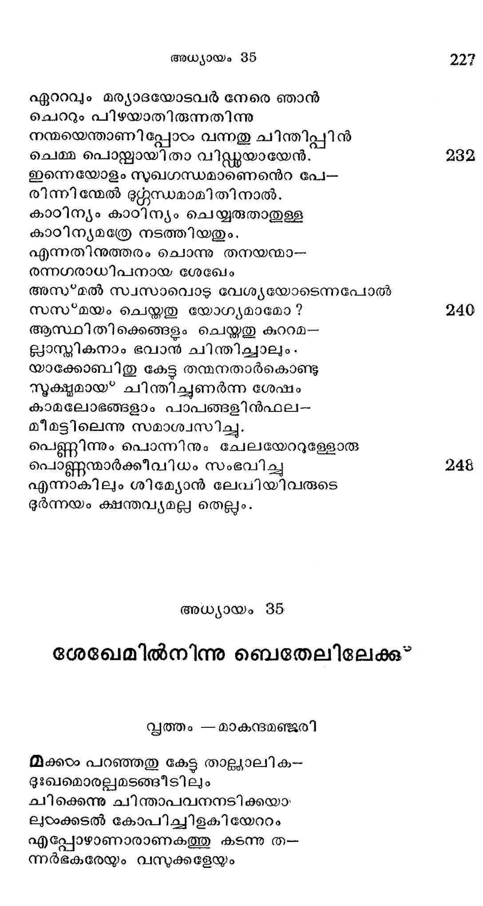

ദീനാചരിതം
വൃത്തം - മാകുന്ദമഞ്ജരി
ഇസയ്രേലിഭീഖ്യയാല് ശോഭിക്കും യാക്കോബിൻ
വിശ്രതരായുള്ള പുതൂര് മദ്ധ്യേ
ഉണ്ടായിരുന്നൊരു ബാലികാ, ഹലവ്വചയിന്
രണ്ടാമവതാരമെന്നപോലെ.
ദീനാഭിധാനയാ മായവടം കാമുക-
ദീനതജ്കകേററ നിദാനമായി
യ൦വ്വനബാഹുവാല് കനയമാരമാം തിര
ചൊപവ്വിലകററി വിളങ്ങിനിന്നാഠം.
നാരീമണിയുടെ സനന്ദര്യശോഭന്ക്ക
നേരായ കാന്തി കാണായ*കമൂലം
ചാവ്വംഗിയാളിവരം പ്രത്യേക സൃഷ്ടിയെ
ന്൯൮ിനിവാസികടം ചൊല്കയായി.
ഏക നുതയാകമുലം പ്രനൂുവും സ്നേ-
ഹാകുലനായ ജനയി താവും
സോദരവ്വന്ദവും ലാളിച്ചു ലാളിച്ചു
മേദുരസ്നേഹം വളര്ത്തുകയാല്
ദീനതന് സന്ദര്യധോരണിയോടൊത്തു
ഹീനഗുണങ്ങളും ചേര്ന്നുവന്നു.
വേണ്ടപോലില്ല ഭയം ഗുരുക്കന്മാരില്
തണ്ടു മനസ്സില് കുടിയുറച്ചു
വരം വിഭൂഷണമെന്നിവയിൽല് സദാ
നിന്ത്രപമായ ഭ്രമം കലര്ന്നു.
ഏതുധരിച്ചാലുമല്പം കഴിഞ്ഞതില്
ചേതോവിരക്തിയുദിചൂടനേ
പുത്തനായ്ള്ളോന്നു വാങ്ങി ക്കൊടുക്കവാന്
ശക്തിയായ് ഹേമം തുടരുമവരം
ഈദൃശമായുള്ള നിബ്ബന്ധം സാധിപ്പാന്
മാതാപിതാക്കാം മടിക്കുമാകില്
കണ്ണീരൊലിപ്പിച്ചു ഭുര്മ്മുഖത്തോടവ.--
ളൊന്നും ഭൂജിക്കാതിരുന്നുകൊള്ളം.
അല്ലായ*കില് പാത്രങ്ങടം തട്ടി ത്തകര്ത്തിടും
കില്ലെന്ന്യേ വസ്്രം വലിച്ചു ചീന്തും
മററു മഹിളാമണികളടെയുട
മുററുമവരിന് മുഖപ്രകൃതി
ചുററുപാടംഗസവഭാവമിത്യാദിയേ-
പ്പററി ഹസിച്ചു ദിനം നയിക്കും.
(ന്രീജനമെന്ന പതക്കത്തില് വന്റലേണ്ടും
ഭ്രാജന്മണിയാണു ഞാനിവണ്ണം
നേത്രദ്വയം വഴി ഘോഷിച്വവളതി
മാത്രതെളിഞ്ഞു നടക്കുമെന്നും
ഇങ്ങനെയുള്ളൊരു ദീനാ നിജപിതാ
തന്നോടുകൂടി ശിഖേം പുരിയിൽ
വന്നു നിവാസം തുടന്നോരു വേളയില്
തന്നഗരത്തിലേ കന്യമാരേ
കാണ്മാന് പുറപ്പെട്ട കഠതുക ബാഹുല്യ--
മാണ്മനടത്തും ഹൃദയമോടും.
ഹന്ത പിതൃഭ്രാതൃ സമ്മതമെന്നിയേ
സ്വന്ത മനോരഥാരൂഡയായി
വീടുകടംതോറും കടന്നു കഴിച്ചവ-
ളീടെഴും നല്ല സമയമെല്ലാം.
കണ്ടവര് കുററവും കാഞ്ചന ഭൂഷാദി
പണ്ടങ്ങളില് വില ഭംഗിഭേദം
തന്നുടെ വൈഭവ മന്യാദ്ദശഥുണ--
മെന്നിവ വര്ണ്ണന ചെയ്തുകൊണ്ടും
കണ്ണില്പ്പെടും കമലേക്ഷണാവ്വന്ദത്തെ
ത്തിണ്ണം വിളിച്ചുനിറുത്തി സ൮ൃത്തം
എണ്ണം കണക്കുമില്ലാതെ ചൊന്നും മനോ--
ദണ്ണമിയററിനാടം ജ്ഞാതികഠാക്കു.
ദീനയിതേവിധം വീടുതോറും കേറി
മാനമില്ലാതെ നിരങ്ങിടുമ്പോടം
ജാനപടദന്മാര് വഴിക്കു ശിഖേംപ്രഭ
മാനിനി യെപ്പററി കേടക്കുകയാല്
കാണ്മാന് കൊതിച്ചവന് വന്നൊരിടത്തു ത--
ന്നഞ്മയെ ഗോപനം ചെയ്തനിടംക്കേ
വേഷപ്പകിട്ടാല് വശിക്കും വശക്കേടു
ഭേഷായ* വരുത്തും വിധുമുഖിയാടം
ജോഷമപ്പദ്യയില് കൂടിക്കടക്കുമ്പോടം
തോഷമോടെത്തിയരികില് ശേഖേം
സാഹസകൃത്യത്തില് പേരെടുത്തുള്ള തന്
ബാഹുബലമെഴും കിങ്കരരെ
കന്യാമണിയേ വഹിച്ചു നിജ ഗൃഹം
തന്നിലാക്കീടുവാനാജ്ഞാപിച്ചു.
പ്രേതങ്ങളെ യമദൂതന്മാര് പോലവേ
ചേതോഹരാംഗിയേ രാജഭൃത്യര്
പൊക്കിയെടുത്തു നടന്നൊടുവിലവര്
ചിക്കെന്നിറക്കി ഗ്ൃപനന്െറ വീട്ടില്.
വാനത്തില് നിന്നു തടില്ലതയെന്നപോല്
മാനിനീ മലിയച്ചേടകരിന്
ബാഹുദണ്ഡങ്ങളില് നിന്നു പതിച്ചപ്പോഴം
ഗേഹം മുഴുവന് തിളതിളങ്ങി.
അന്യ സാധാരണ മല്ലാത്ത രമൃത
ധന്യമായ*ത്തിങ്ങുമീ നാരിയുടെ
വക്തുമാം ബാലാര്ക്കന് ശോഭിക്കവേ പ്രഭ
ചിത്തപത്മം വികസിച്ചു ഭംഗ്യാ.
ശോണാധരമവന് കണ്ടൊരു മാത്രയില്
തൂണുപോല് നിന്നുപോയ വിസ്മയത്താല്.
ഉത്തുംഗമാം കുചയുശംം നിമിത്തമാ-
മത്തന് വിചിത്തതയാര്ന്നനല്പം
കാറൊളികൂന്തല് വനത്തിലൊളിക്കുവാന്
കൂറുവളരെ വളര്ന്നു ഹൃത്തില്.
പൊന്നിറമാണ്ടുള്ള മേനിയില് തന്നു€൦--
ലൊന്നുരസീടുകില് ഭാഗ്യമെന്നു
തന്നുള്ളില് നിശ്ചയം ചെയ്ത ബലാല് കന്യ
തന്നേയണച്ചഛ പുണര്ന്നു ശേഖേം.
വേലിയടയാത്ത കേദാര സസങ്ങരം
കാലികം തിന്മത൬ു വിസ*്മയമോ?
ലജ്ജാവസനത്താല് ഛാദിത്രാകായ്ക. ൽ
കച്ചവാര് കേശികളീവിധമാം.
ഏററമൊതുങ്ങി വസിക്കേണ്ട പെണ്ണുങ്ങരം
ചുററി നടക്കവതെന്തബദ്ധം
കാഴ്ചകയംകണ്ടു കണ്ടാഴ്ചകഠം ചൊല്ലമ്പോടം
വേഴ്ച ദുഷ*കര്മ്മത്തില് സംഭവിക്കും.
ആയതുകാരണം ലോഭന സ്ഥാനത്തു
പോയിീിടരുതൊരു നാരിപോല)ംം
ഭീനയാളീദൂശം ഹീനയായ*ത്തീര്ന്നതു
മാനികളാമവരടം തന്നുടയ
സോദരര് കേട്ടു വയലില് വച്ചപ്പോഴെ
ഖേദമുദിച്ചവര്ക്കാകമാനം.
ശേഖേം ജനകനാം ഹാമോര് നിജസുത-
വാകംശ്രവിച്ചു യകബകാഗ്രേ
ചെന്നു തദീയ സുതയേ ശിഖേമിന്നു
നന്ദിയോടേകുവാന് ചൊല്ലിനിന്നു.
എന്മകന് ശേഖേമിന്നുള്ളം ഭവത്സത--
തന്മേലടിഞ്ഞു കിടക്കുകയാല്
ആയവന്നേകുവിന് കന്ൃയകയെപര--
മായതന്യായമെന്നാരുരയ്ക്കും ?
മാത്രമല്ലീനമ്മഠം സ്ത്രീകളെ യന്യോന്യ--
മുഭ്വഹനാത്ഥം കൊടുത്തുമേലില്
ബന്ധുത്വ മഞ്ചാതുറ്പിക്ക ദേശത്തു
സ്വതഹിതംപോലെ പാര്ത്തുനിത്യം
വ്യാപാരം ചെയ്തിട്ട ലാഭമുണ്ടാക്കുവിന്
വ്യാപാദ ശങ്കയകററിടുവിന്.
സ്ഥാവരവസ്തുക്കരം വേണ്ടപോല് തേടുവിന്
സ്ഥാപനം ചെയ്*്വിന് പരസ്റ്റരൈക്യം.
ഹാമറുപന്യസിച്ചന്ത മണഞ്ഞപ്പോടം
കാമുകന് ശേഖേമുരച്ചി തേവം.
മാനൃതമനാകു മിസ്രയേലേ ബഹു-
മാന്യരാം തത്സുതരേവരുമേ !
യോഷിന്മണിയായ ദീനയേ നല്കുവാന്
തോഷമെന് പേരിലണ്ടാകവേണം
സ്ത്രീധനമോ മററുദാനങ്ങളോ തരാ-
നേതും മടിയില്ല വേണ്ടുവോളം.
ചോദിപ്പിനെത്രമേല് വേണമെന്നാകിലും
വാദിക്കുകില്ലതി മാത്രമെന്നു.
എന്തുഭവാന്മാര്ക്കു തന്നുമക്കന്യയേ
ബാന്ധവി ക്കേണമെന്നാശ പാരം
വാക്കുകളിങ്ങനെ കേട്ടപോതിസ്രയേൽ
മക്കളവരുടെ കോപതാപം
ഉടംക്കുരുന്നില് മറച്ചിക്കപടോക്തികടം
വെക്കമുരച്ചി തവരോടേവം
ലിംഗാഗ്രചമ്മിക്കു പെണ്ണു നല്ലീടുവ-
തെങ്ങടംക്കപമാനമാണു പാത്താൽ.
എങ്കിലും ചേല കഴിക്കുകില് ബാലയേ
ഭംഗമെന്യേ തരുന്നുണ്ടു ഞങ്ങരം.
അല്ലായ്കില് കന്യയെ കൊണ്ടിങ്ങു പോരുമെ--
ന്നല്ലാതെ ചൊല്ലവാനൊന്നുമില്ല.
ഇത്ര വിഷമനിയമം വഹിച്ചിട്ട-
മിത്തിരിശേഖേം മടിച്ചതില
കാര്യസിദ്ധ്യത്ഥം ശ്രമിപ്പവര് വൈഷമൃ്ൃ--
കാര്യം ലഘുവായ* ഗണിച്ചിടുന്നു.
കാമാഗ്നി കത്തുമ്പോളാശ്വാസം കിട്ടവാന്
ഭീമോദധിയിലം ചാടും മത്തൃര്.
ഇസ്രയേല് പുത്രന്മാര് വച്ച വലയിതു
വിസ്രംഭ യോഗ്യമായ തോന്നുകയാല്
ശേഖേമും തന്നുടെ താതനും മററുള്ള
ശേഖേം നിവാസികളാകമാനം
യാക്കോബിൻ വംശത്തോടേകീഭവിക്കുവാന്
ചിക്കെന്നു ചേലയനുസരിച്ച.
വൈദേശികന് തനന്െറ സമ്പത്തി നമ്മഠംക്കു
കൈവശമാകും പ്രയാസമില്ല
എന്നു ശിഖേമും തത്താതനും ചൊല്ലയാ-
ലന്നഗരസ്ഥര ശേഷമായ്
ദ്രവ്യാശ മുൂലമാണിക്കൊടും വേദന-
ഇവ്യാജം കീഴ*പെട്ടതോര്ത്തു കണ്ടാൽ
അത്ഭുതമത്ഭുതം കാമലോഭങ്ങളേ !
സ്വല്ലമല്ലാ ഭവച്ഛക്തി ഭൂമ.
ഇച്ഛാനിവ്കത്തിക്കു വേണ്ടി സ്വകാംഗത്തെ.
വിച്ഛേദിപ്പാനും മടിക്കാ നിങ്ങരം.
ശേദഖേം സംഹാരം
ശേഖേമൃരിങ്ങനെ ചേലയനുഷ്ഠിചു
“ശാഖാമൃഗവല് ഭൂമിചിടുമ്പോഠം
ലിംഗചമ്മാഗ്രം പഴുത്തു ചീഞ്ഞെത്രയയം
വിമ്മിട്ടമായി ക്കിടന്നിടുമ്പോടം
ദീനയിന് സോദരരായ ശിമയോനും
ലേവിയും ശേഖേമിന് ദുഷ*കൃതിക്കു
തക്ക പ്രതിക്രിയ ചെയ്*വാനൊരുമ്പേട്ട
-ഖഡ*ഗം മിനുക്കി നിശി തമാക്കി
പേടമാന് കൂട്ടത്തില് വ്യാഫ്രങ്ങം പോലവേ
ചാടിക്കയറിനാര് വീടുകളില്
പെട്ടെന്നു കണ്ട പുരുഷരെയാകവേ
വെട്ടി നുറുക്കി നാർ നിഷ്കാരുണ്യം.
(സ്തരീകരം ശിശുക്കളം വാവിട്ട കേഴിലും
ശോകമൊരല്പലമുദിച്ചിടാതെ
ചുരുഷ കണ്ണമരിഞ്ഞു വീഴഴത്തിച്ചുട--
ചോരയില് മുക്കി ഭവനമെല്ലാം
കാട്ടപോത്തെന്നപോല് ബോധരഹിതരാ
യൊടുമടങ്ങാത്ത വാശിമൂലം
ശൂട്ട നിറഞ്ഞു വഴിഞ്ഞിട്ടെരികനല്
കട്ട ചിതറുന്ന കണ്കളോടും
ജ്യേഷ്മഷാനുജന്മാരാം ലേവി ശിമയോന്മാർ
പട്ടണം ചുററി നടന്നു ചെയ്ത
ഘോരമാമീ വധമോരുവാന് പോലമീ
പ്പാരിലൊരുവരില്ലാതിരിക്കെ
പാരമശക്തനാം ഞാനുര ചെയ്യുവാന്
വീരനെന്നില്ല വിചാരലേശം.
വീണുപിടഞ്ഞ ശവങ്ങളമവുിധം
ശോണിതവും നിറഞ്ഞുള്ള വീട്ടില്
ക്രൂരാഗ്രഗാമികളാമിവര് പിന്നെയും
നേരെ കടന്നവിടുള്ളതാകും
ജംഗമവസ്തുക്കഠം (്്രീശിശുപവ്ൃന്ദമെ
ന്നിങ്ങനെ പേര്പെടും സവ്യത്തെയ്ും
കൊള്ളയിട്ടാരിതിന് മുന്പുതന്നെ ചെല്ല--
പ്പിള്ളയാം ദീനയേക്കൊണ്ടു പോന്നാര്.
ഇങ്ങനെ ശേഖേം നിജസ്വസാവിന്നു നേര്
തിങ്ങും മദം പൂണ്ടു ചെയ്യതാകും
ഭംഗിയല്ലാത്ത പ്രസ്തത്തിക്കു തക്കതായ?
തുംഗതയേറും പ്രതിക്രിയയേ
ചെയ്തവിരമിച്ചാരിസ്രായേല് പുത്രന്മാര്
കൈതവം വാളെന്നീ രണ്ടുമൂലം.
പേര്ഷ്യപ്രഭുവാകും നാദിര്ഷാ ചൊല്കയാല്
സേര്ഷ്യരായ* ഡല്ഹിയില് പാത്തിരുന്ന
ലക്ഷത്തോടന്പതിനായിരം മത്ത്യരെ
കഴക്ഷേയകം കൊണ്ടൊടുക്കി യൊരു
ഉഗ്രഭടന്മാരെപ്പോലെ യശ്ലേഖേമാ--
മഗ്രുനഗരം വെളപ്പിച്ചവര്.
ലേവി ശിമയോന്മാരാകുന്ന മൂര്ഖന്മാര്
ഘഘാതക കര്മ്മം നടത്തിയപിന്
താതനന്െറ സന്നിധഴ വന്നോരു നേരത്തു
സ്റ്റീതരുജയോടങ്ങോതി യിസ്രേൽ
എന്തൊരു സാഹസമാണു സുതന്മാരെ
ക്വിന്തയി ല്ലാതിപ്പോഴം കാട്ടിയതും.
എന്തെങ്കിലുമൊരു കര്മ്മം തുടരും മുന്
ചിന്തചെയ്യായകില് വിനാശമുണ്ടാം.
അന്യജാതിക്കാരില് മധ്യത്തിലാണു നാ
മിന്നു നിവസിപ്പതോര്ത്തു കണ്ടാല്
ആയവരേവരും ചേര്ന്നല്പപക്ഷമാ--
മീയിവനേയുമെന് മക്കളേയ്യം
സന്നാഹമോട് വന്നാകെ നശിപ്പിക്ക--
മെന്നുള്ള തിലെന്തു ഭിന്നപക്ഷം?
അധ്യായം 85
ഏററവും മര്യാദയോടവര് നേരെ ഞാൻ
ചെററും പിഴയാതിരുന്നതിന്നു
നന്മയെന്താണിപ്പോടം വന്നതു ചിന്തിപ്പിന്
ചെമ്മ പൊജയ്യായിതാ വിഡ്ലുയായേന്.
ഇന്നെയോളം സുഖഗന്ധമാണെനന്െറ പേ-
രിന്നിന്മേല് ഭശ്ശന്ധമാമിതിനാല്.
കാഠിന്യം കാഠിന്യം ചെയ്യരുതാതുള്ള
കാഠിന്യമത്രേ നടത്തിയതും.
എന്നതിന൯ുത്തരം ചൊന്നു തനയന്മാ--
രന്നഗരാധിപനായ ശേഖേം
അസ്മല് സ്വസാപവൊട വേശ്യയോടെന്നപോല്
സസ*മയം ചെയ്തതു യോഗ്യമാമോ ?
ആസ്ഥിതിക്കെങ്ങളം ചെയ്തതു കുററമ--
ല്യാസ്റികനാം ഭവാന് ചിന്തിചാലും.
യാക്കോബിതു കേട്ട തന്മനതാര്കൊണ്ടു
സൂക്ഷ്മമായ* ചിന്തിച്ചുണര്ന്ന ശേഷം
കാമലോഭങ്ങളാം പാപങ്ങളിന്ഫല-
മീമട്ടിലെന്നു സമാശ്വസിച്ചു.
പെണ്ണിന്നും പൊന്നിനും ചേലയോററുള്ളോരു
പൊണ്ണുന്മാര്ക്കീവിധം സംഭവിച്ചു
എന്നാകിലും ശിമയോന് ലേവിയിവരുടെ
ഭുര്ന്നയം ക്ഷന്തവ്യമല്ല തെല്ലം.
